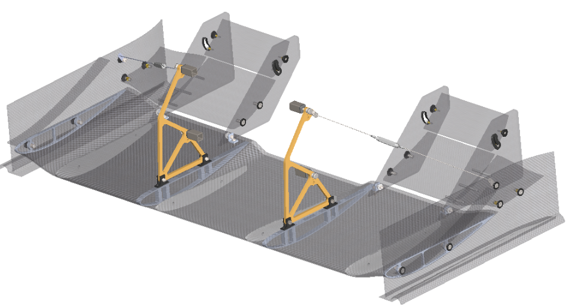
Overview
The front wing generates a significant share of the car's downforce, but every gram in the mounting hardware is weight the car has to accelerate and brake against. My work this season centered on redesigning the mounting system — the pylons, U-channels, and ribs that connect the wing to the chassis — to cut mass while holding a team-wide minimum factor of safety of 1.75.
Results
Design & Mounting Strategy
The wing mounts to the car only through the front element (FE1), removing the need for separate mounting ribs on the second element (FE2) and simplifying the load path. Mount height and the third element (FE3) are both adjustable, which lets the team tune center of pressure and upwash without a full redesign between events.
- Pylons — 0.148 kg, a 41% mass reduction from the initial 250 g design, achieved through topology optimization. FOS: 3.6.
- Mounting U-channels — FOS: 2.4.
- Pylon mounting ribs — internal truss/spar system removed after optimization showed it wasn't load-bearing. FOS: 3.2.
Structural Analysis
Every component went through static structural FEA in ANSYS before manufacturing — checking von-Mises stress against the material's yield strength, then confirming the resulting factor of safety cleared the team's 1.75 minimum with margin.
Pylon & Mounting
[Write a few sentences here about the pylon and mounting analysis as a whole — the design decisions behind it, what the three plots below show together, how the results compare across iterations, or anything else worth explaining before someone looks at the individual images. This paragraph sits above all three photos, separate from the short caption under each one.]
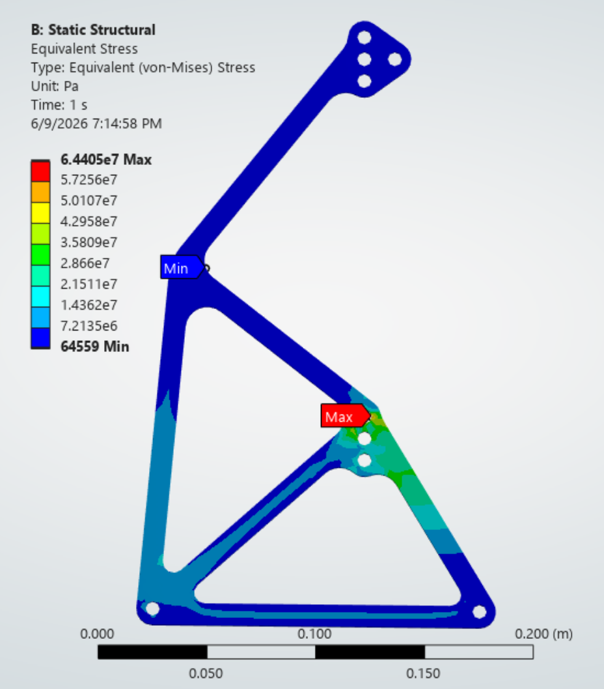
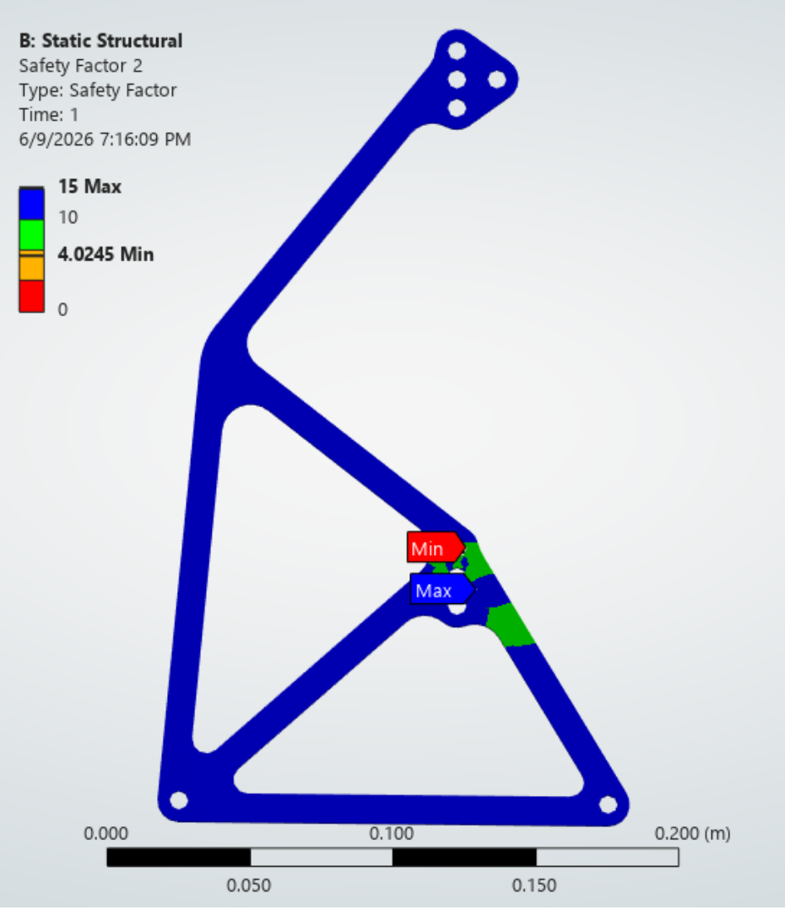
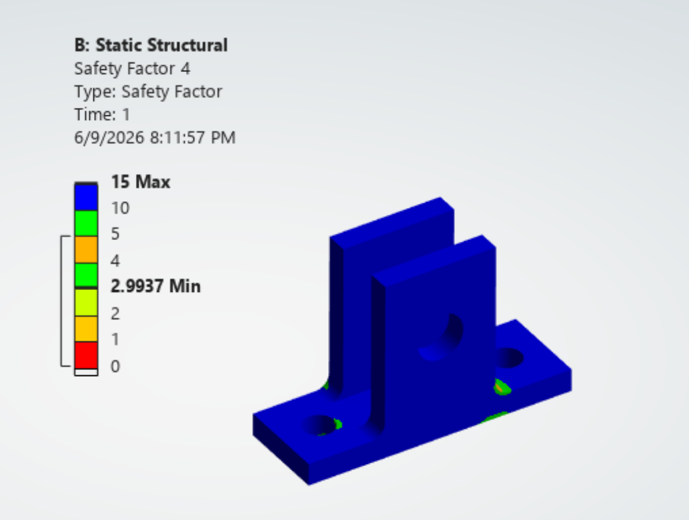
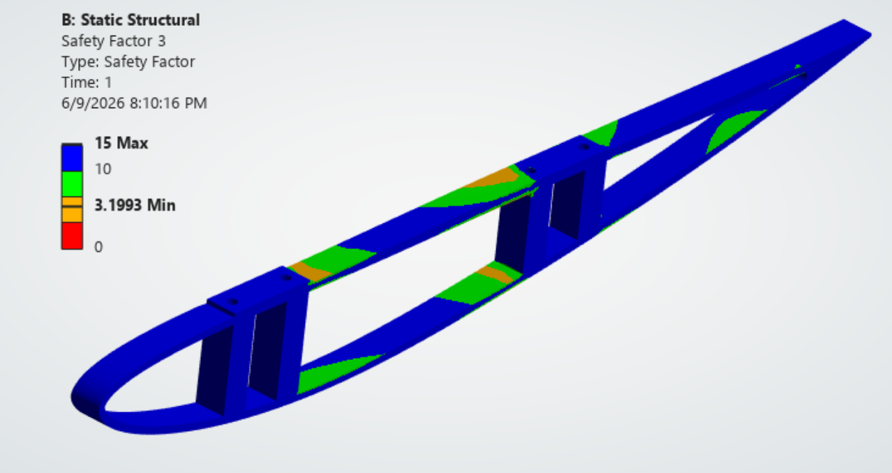
Mesh Convergence
[Write a few sentences here about the mesh convergence study — why it mattered for this component, what element sizes were tested, and what confirming convergence let you conclude about the FEA results before trusting them for design decisions.]
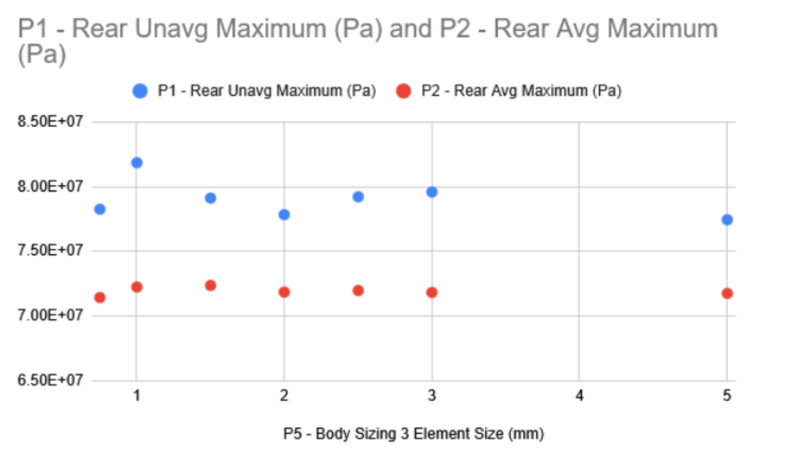
Assembly & Detail
[Write a few sentences here about the assembly and detail photos — how the pieces fit together, the hardware choices behind the mounting and clevis design, or anything worth calling out before someone looks at the two close-ups below.]
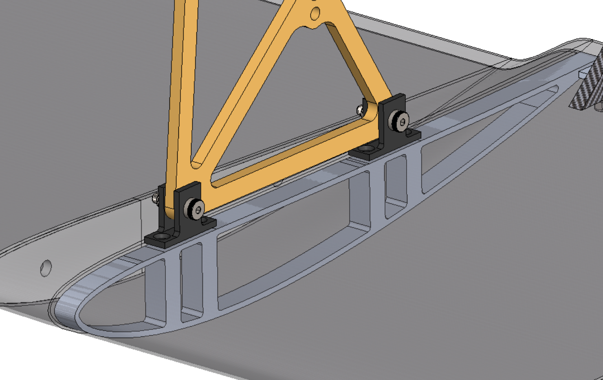
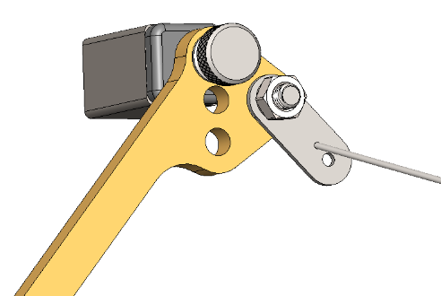


Manufacturing
[Write your paragraph here about the carbon fiber layup process — what you did, the steps involved, and anything worth calling out about how it went.]
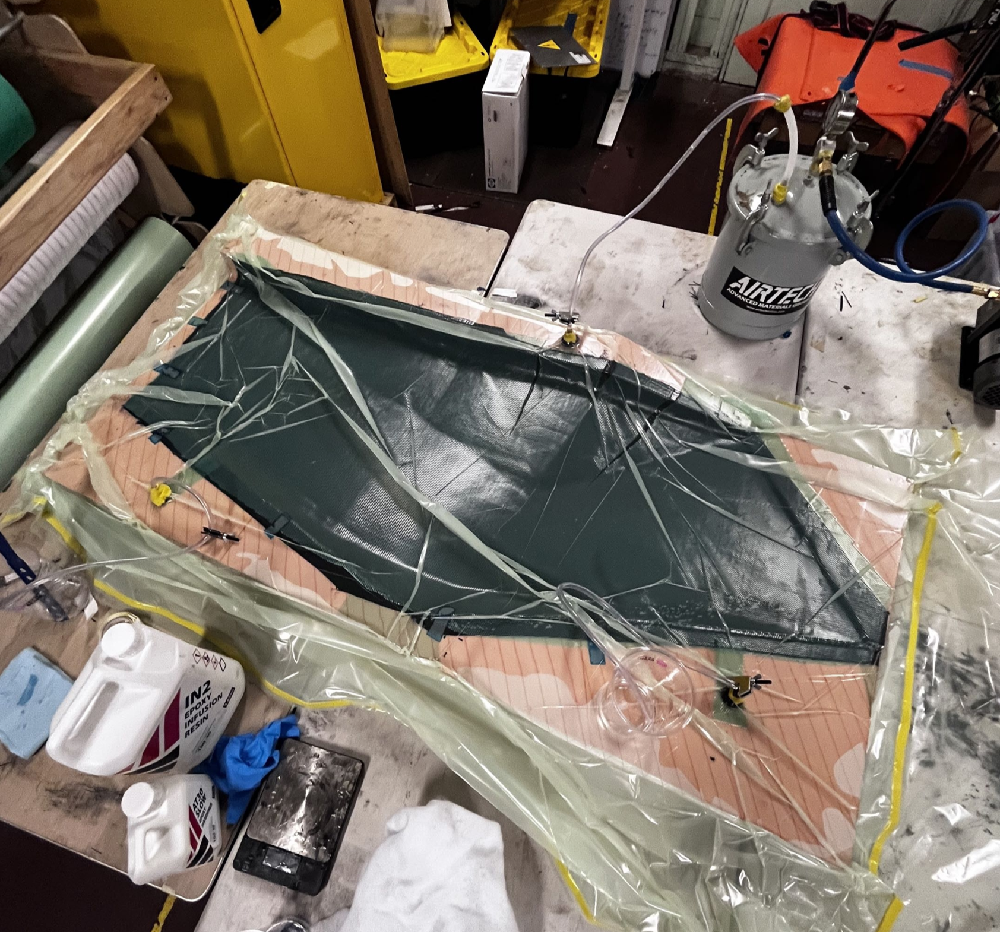
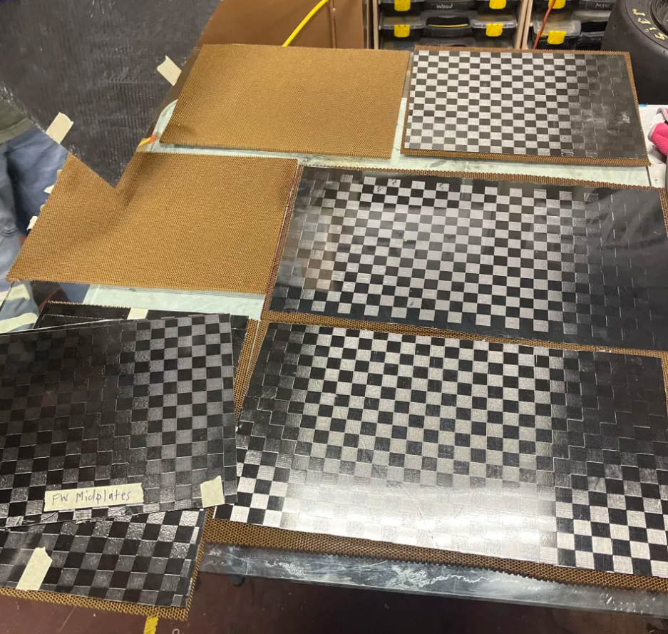
Design Event Poster
Poster made for FSAE Electric at Michigan.
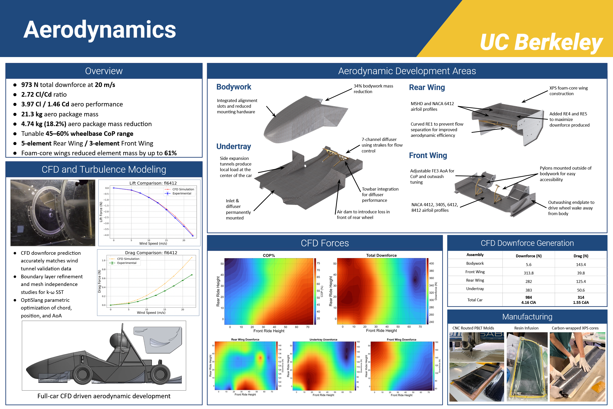